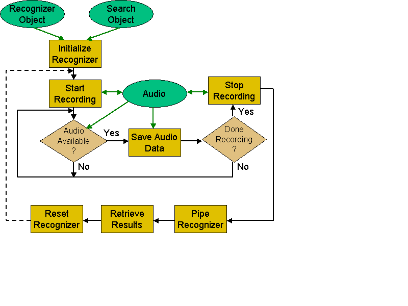
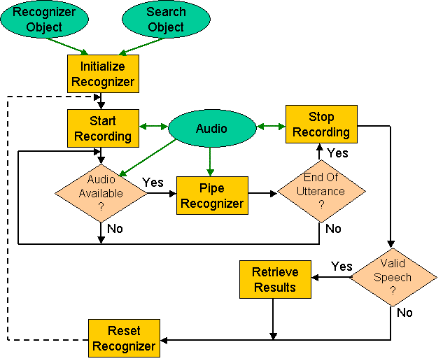
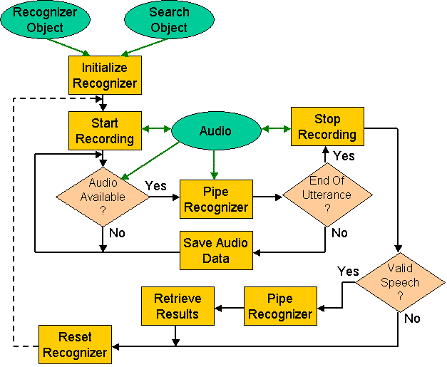

Audio can be directly fed to the recognizer using thfRecogPipe. Refer to the RecogPipe Sample for an example of how to use this call. The manner in which it is employed is determined by the granularity of the recognition process. Let's consider the following factors:
Audio can be processed all at once (batch) or a bit at a time (pipelined). For example, if recognizing from an audio file, we might choose to pass the audio to the recognizer in a single large chunk. In contrast, if we're dealing with live audio, we're more likely to want to perform recognition on smaller audio chunks, as soon as they become available from the audio device. Pipelined recognition typically requires asynchronous processing, but yields recognition results faster because we begin recognizing the audio stream immediately, rather than waiting for the entire utterance to be available before starting.
|  |
| Figure 3: Batch Recognition |
|---|
The thfRecogPipe function supports both approaches:
NOTE: Audio can be passed to thfRecogPipe in blocks of any size but must not exceed the maximum buffer size specified when the recognizer was created (see thfRecogCreateFromFile), or an error will be returned.
The thfRecogPipe function is responsible for both speech detection (optional) and recognition. When calling it you get to decide whether to perform both tasks together (full) or just one of these tasks (partial) in a single call.
|  |
| Figure 4: Full Recognition |
|---|
Full recognition is preferred for simplicity, however you may opt for partial recognition if your recognizer runs slower than real time in a single threaded application. For example, in order to avoid dropping or overflowing the audio buffer when using live audio input, you may decide to only do speech detection on the audio and delay recognition until you're done recording. Speech detection is not only quicker than recognition, it can also be used to decide when to stop recording.
The following control flags are used when calling the function:
To perform full recognition, call thfRecogPipe once per audio block with the SDET_RECOG flag. For partial recognition, call it twice per block (assuming you've decided to use speech detection), first with the SDET_ONLY flag and later with the RECOG_ONLY flag.
|  |
| Figure 5: Partial Recognition |
|---|
NOTE: Use thfRecogGetSpeechRange to retrieve the location of the speech region in the audio block. When doing partial recognition, we only want to pass the speech region identified during the SDET_ONLY phase to the RECOG_ONLY phase, rather than the entire audio block. Failing to do so will be equivalent to not using the speech detector, and performing many fruitless calculations. In addition, the grammar specification might depend on a speech-detected utterance.
Once an end condition is reached, the recognizer must be reset using thfRecogReset before it can be used again.
The status information can be used to determine what action to take next. Typically, in a pipelined system you would keep calling thfRecogPipe until an end condition was reached or until there's no more audio. For example, if the status is RECOG_QUIET or RECOG_SOUND, continue calling thfRecogPipe with more audio. If the status is RECOG_DONE or RECOG_MAXREC, stop recording (if appropriate); Process any remaining buffered audio; Call for the recognition result. If the status is RECOG_SILENCE or RECOG_IGNORE, no speech was detected so no result will be available; Reset or destroy recognizer.
For partial recognition, the status returned by the first phase (SDET_ONLY) must be passed as input to the second phase (RECOG_ONLY). If no speech detector is used, call only the second phase.
NOTE: Audio fed to the recognizer must be the same sample rate as that of the acoustic model. Use thfRecogSampleConvert to convert it if needed.